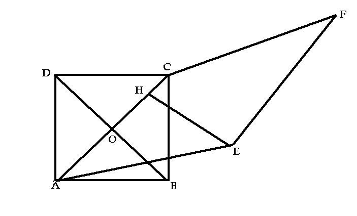

初二数学题~!
2009-02-04
如图,已知四边形ABCD是正方形,对角线AC,BD相交于O,四边形AEFC是菱形,EH⊥AC,垂足为H,试说明EH=1/2FC.

欲证EH=1\2FC,只要证EH=1\2AE,只要求出∠EAH=30°。这也不容易：方法：做菱形的高，CP设法求出菱形与正方形面积相等，（设正方形边长为1，）即：ADAB=AECP （AE=AC=根号2）求出CP=根号2\2，sin∠CAE=CP\AC=1:2∴∠CAE=30° sin∠CAE=EH\AE=1：2即EH=1\2AE=1\2FC